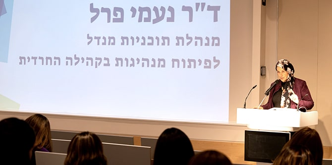

The Mandel Program for Leadership Development in the Haredi Community was launched over a decade ago and is directed by
Dr. Naomi Perl, a graduate of Cohort 16 of the Mandel School for Educational Leadership. As she describes it, the goal of the program is to develop leaders from within the Haredi (ultra-Orthodox) community who will engage faithfully with the needs of the community, respond to those needs with a high level of professionalism, work to advance the community’s welfare and help it flourish, and represent the community effectively in the government and public systems, all while preserving the deep commitment that the fellows have to the values and norms of Haredi society. The program is founded on the belief that members of the Haredi community itself are best suited to identify the challenges facing the community and to offer effective solutions.
Program director Dr. Naomi Perl (Photo: Simanim Productions)
Over the course of the program, which is conducted one day a week over two academic years, each fellow learns to formulate a social vision and to translate it into a viable work plan. With separate cohorts for men and women that open in alternate years, the program provides a safe space for internal Haredi discourse and strengthens commitment to the Haredi community, while introducing fellows to the pluralist and democratic approach of the Mandel Foundation–Israel.
The program envisions a vibrant and warm Haredi community with a rich culture and deeply ingrained values, which flourishes spiritually, economically, socially, and individually; a welcoming and engaging community that shares its human and spiritual treasures with all of Israeli society; and a community whose members are fully committed to Torah and are citizens who are actively engaged in Israel’s economy, academia, and public leadership, and who are involved in ensuring Israel’s security, wellbeing, character, and values.
Fellows in the audience at the project presentations (Photo: Simanim Productions)
On March 24, 2022, the fellows of Cohort 8 of the program presented their individual projects at an event at the Mandel Leadership Institute at which they discussed the changes they wish to bring about within their community. The cohort includes 14 women from throughout Israel, from as far as Ma’alot in the far north to Rehovot in the southern central part of the country. They come from a wide range of professional fields: formal and informal education, mental health, hi-tech, the social welfare system, economics, academic research, nutrition, and community work. All the fellows are mid-career professionals who seek to develop social initiatives that will expand their impact on their fields of work and on the community in which they live. Following are three examples of projects that are being conducted by fellows in the program (full names have been withheld for privacy reasons):
-
Y.S., the director of a religious community center, seeks to improve professional development in the field of informal education in the Haredi community. During her studies in the program, she became involved in a collaboration between program fellows and graduates and the Israel Police, which is designed to improve relations between the Haredi community and the police. At one of the events of this initiative, Y. S. offered her community center as the site for a pilot of a national project designed to foster trust and cooperation between the police and minority communities in Israel. The Israel Police took her up on her offer, and Y. S. is currently running pilots of the program in two cities, even before completing her studies at Mandel. As part of these pilots, tens of police officers have received training in cultural sensitivity that can enhance their understanding of the Haredi community.
-
N.G. began the program after completing her studies in clinical rehabilitation neuropsychology. Beyond opening a private clinic, she wanted to engage in public activism aimed at improving awareness about mental health and psychological treatment in the Haredi community. In addition to leading a forum of Haredi psychologists, N.G. used the project presentation event as the opportunity to launch a new website with podcasts on psychological issues that she has developed and produced especially for Haredi listeners. The episodes can be downloaded on devices that have “kosher internet” filters, and can be shared through digital platforms that are widely accepted in the Haredi community.
- H.B., a clinical social worker, presented the framework for a project designed to build bridges between internal welfare associations within the Haredi community and the public social welfare system. Like three other fellows of Cohort 8, she noted the challenge of lack of trust in government institutions that is found in the Haredi community, and stressed the importance of developing cooperation between the community and state services in the areas of welfare, employment, and education. This is something that many graduates of the Mandel Program for Leadership in the Haredi Community have in common: they span the borders of different sectors, and are able to use their professional capabilities and their fluency in the language of both the Haredi community and general Israeli society in order to build bridges between even the most conservative ultra-Orthodox Jews and the State of Israel. The program and its graduates see these bridges as a two-way street that enables Israeli society to benefit from the cultural richness and positive values of the Haredi community, while connecting members of the community with the broader society around them.
The women of Cohort 8 will complete the program in July 2022, upon the conclusion of two years of study. Parallel to them, 20 men are currently first-year fellows in Cohort 9 of the program, which will continue with its second year of studies in 2022–2023. The admissions process for the next cohort of women, Cohort 10, which will begin studies in 2023, is currently in its final stages.
Read the overview of the projects of Cohort 8 >>
{kind=link}
{kind=link}